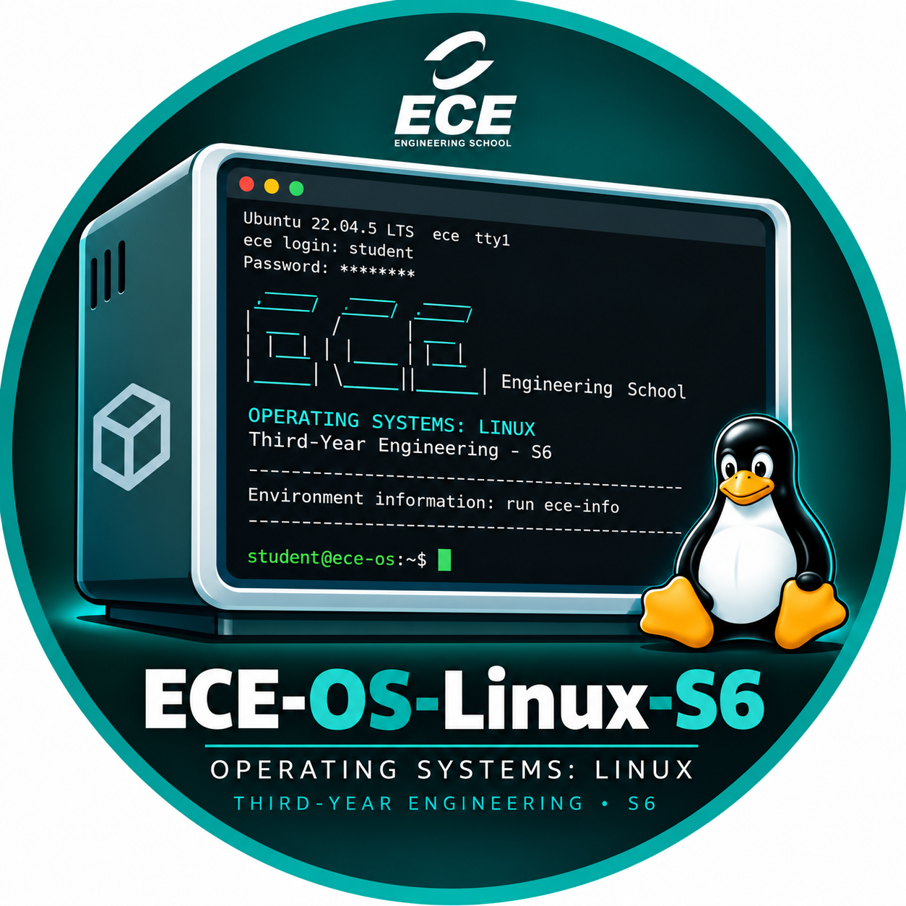

ECE · École d'ingénieurs · ING3 · S6
Operating Systems:
Linux
Un espace unique pour consulter les objectifs du module, explorer le programme, suivre les séances et accéder aux ressources pédagogiques.
Explorer les ressources7 parties pédagogiques28 h de cours et TP6 h de soutenances

Ressources du module
Quatre espaces distincts, accessibles depuis le menu principal.
01 / DOCUMENT DE RÉFÉRENCE
Syllabus
Présentation institutionnelle, compétences, programme détaillé et modalités d'évaluation. Mise en page imprimable en A4.
Consulter le syllabus →02 / SYNTHÈSE VISUELLEPoster
Vue d'ensemble du module au format affiche A3, pour présentation ou impression.
Voir le poster →03 / ORGANISATIONPlanning
Calendrier pédagogique 2027, séances, travaux pratiques, évaluations et jalons du projet.
Consulter le planning →04 / OUTIL EXPLORATOIRESimulateur
Tester différentes notes et comparer le calcul pondéré avec ou sans plafonnement conditionnel.
Ouvrir le simulateur →À l'étude — simulateur de notes. Le simulateur et l'hypothèse de plafonnement sont des idées pédagogiques à explorer. Ils ne constituent pas des modalités d'évaluation officielles et ne modifient pas le syllabus.